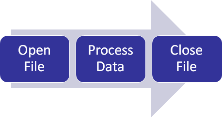

10. Gestion de fichiers et E/S#
{kind=link}
%matplotlib inline
import numpy as np
from IPython.display import HTML,display,IFrame
from IPython.display import YouTubeVideo,Markdown,Video
10.1. Fichier informatique#
définition (Wikipédia) un fichier informatique est une collection d’informations numériques (séquences d’octets) réunies sous un même nom, enregistrées sur un support de stockage tel qu’un disque dur, un CD-ROM, une clé USB …
En vue de faciliter leur organisation, les fichiers sont disposés dans des systèmes de fichiers qui permettent de placer les fichiers dans des emplacements appelés répertoires ou dossiers eux-mêmes organisés selon le même principe de manière à former une hiérarchie arborescente
Sur le système de l’ordinateur, un fichier est repéré par son nom avec éventuellement une extension et le répertoire dans lequel il se trouve.
En calcul scientifique, on considère 2 types principaux de fichiers:
des fichiers de programmes qui contiennent un code informatique exécutable par l’ordinateur, sous 2 formes principales:
fichiers exécutables qui contiennent un code binaire directement exécutable par le processeur (extension .exe sous windows). Ces programmes ne sont pas modifiables et sont propre à l’ordinateur utilisé (programmes commerciaux ou propriétaires)
fichiers sources qui contiennent le code source du programme dans un langage de programmation (extension .py pour les programmes Python). Ces programmes peuvent être modifiés et être exécuter sur n’importe quel ordinateur.
des fichiers de données qui contiennent des données (data) crées et manipulées par les programmes, sous 2 formes principales:
des fichiers binaires qui contiennent l’information brute, utilisant le codage de l’ordinateur (le plus efficace pour le stockage)
des fichiers textes qui contiennent les données écrites sous forme de lignes de texte (format le plus simple à manipuler)
Dans la suite on ne considérera que les fichiers programmes Python (extension .py) et des fichiers de données textes (extension .dat).
Pour éviter des problèmes de compatibilités entre systèmes informatiques, on choisira des noms de fichiers sans caractères accentués, sans espace ni caractéres spéciaux (autre que . ou _ ou - )
10.2. Fichier de programme (ou script) sous Python#
un fichier contenant un programme Python a par convention une extension .py. Un simple éditeur de texte (notepad sous Windows) suffit pour créer et modifier un programme Python
gedit « voir le site gedit » un éditeur simple et efficace
vim et variante « soir le site vim » un éditeur de référence pour les programmeurs
spyder « voir le site spyder » un environnement de développement Python à la matlab pour les applications scientifiques. Sous Spyder, on utilisera plutôt la console Ipython pour exécuter les programmes, que la console par défaut qui utilise des conventions matlab différentes d’un interpréteur Python classique.
10.2.1. Exemple: trace de courbes de Lissajous#
Une courbe de Lissajous (d’après le physicien français « Jules Antoine Lissajous ») est une courbe paramétrique du plan dont les composantes sont des fonctions périodiques du paramètre (en générale le temps en physique, et que l’on peut observer avec un oscilloscope).
Le programme Python suivant lissajous.py trace les courbes de Lissajous suivantes
Le rapport \(n=\frac{p}{q}\) est le paramètre de la courbe et \(\phi\) le déphassage. Le temps \(T\) de parcours de la courbe est le plus petit commun multiple de \(p\) et \(q\): $\(T=pcm(p,q)=\frac{pq}{pgcd(p,q)}\)$
10.2.1.1. fichier lissajous.py#
# excution de commandes
!ls -al lissajous.py
!cat lissajous.py
-rwxrwxr-x 1 buffat buffat 1659 févr. 1 2018 lissajous.py
#! /usr/bin/env python
# -*- coding: utf-8 -*-
"""
tracer de courbe de Lissajous
d'après https://sites.google.com/site/sdcoding/python/physics-with-python
@author: marc buffat
"""
import numpy as np
import matplotlib.pyplot as plt
def pgcd(a, b):
"""calcul du pgcd de a et b par l'algorithme d'Euclide."""
while b:
a, b = b, a % b
return a
def lcm(a, b):
"""calcul du plus petit commun multiple."""
return a * b // pgcd(a, b)
def Lissajous(p,q,phi,N):
""" calcul de N points d'une courbe de Lissajous"""
omega1 = 2*np.pi/p
omega2 = 2*np.pi/q
# temps d'étude
T = p*q/pgcd(p,q)
t = np.linspace(0., T, N)
# equations parametriques
x = np.sin(omega1*t)
y = np.sin(omega2*t+phi)
return t,x,y
def LissajousFigure(p,q,phi):
""" trace de courbe de lissajous
p,q : parametres entiers des courbes x(t),y(t)
phi: déphasage
"""
# pulsation des 2 courbes
om1 = 2*np.pi/p
om2 = 2*np.pi/q
# temps d'étude
T = lcm(p,q)
t = np.arange(0., T, T/1000.0)
# equations parametriques
x = np.sin(om1*t)
y = np.sin(om2*t+phi)
# tracer
plt.plot(x, y, linewidth=2)
plt.title("p=%d q=%d"%(p,q))
plt.xlabel("x(t)")
plt.ylabel("y(t)")
plt.axis([-1.,1.,-1.,1.])
plt.axis('equal')
return
# programme principal du module
if __name__ == "__main__":
# tracer de 3 courbes de Lissajous
plt.figure(figsize=(12,6))
plt.subplot(131)
LissajousFigure(1,2,np.pi/2)
plt.subplot(132)
LissajousFigure(3,2,np.pi/2)
plt.subplot(133)
LissajousFigure(5,4,np.pi/2)
plt.savefig('lissajous.png')
10.2.1.2. exécution du programme#
# execution cde
!echo "execution avec interpreteur python"
!python3 lissajous.py
!ls -al lissajous.png
execution avec interpreteur python
-rw-rw-r-- 1 buffat buffat 97883 mars 20 16:33 lissajous.png
# execution dans une cellule
%run lissajous.py
<Figure size 640x480 with 0 Axes>
10.2.1.3. utilisation en tant que module (ou librairie)#
module fichier contenant des fonctions et des définitions en python (bibliothèque)
nom du module nom du fichier sans l’extension .py
utilisation du module mon_module.py
import mon_module
import mon_module as mn
from mom_module import ma_fonction
from mon_module import *
from lissajous import pgcd,LissajousFigure
print(pgcd(21,9))
LissajousFigure(5,3,np.pi/2)
3
rem si votre bibliothèque n’est pas dans le répertoire courant, il faudra alors spécifier son chemin d’accès (path) (voir documentation Python)
10.3. Fichier de données sous Python#
Comme dans la pluspart des langages informatiques, lire ou écrire dans un fichier, on va associer à un fichier (à son nom) une variable informatique de type file, qui posséde des fonctions (ou méthodes) permettant de lire ou écrire des données dans le fichier.
10.3.1. fonction de lecture/écriture#
ouverture d’un fichier mon_fichier.dat en lecture: f=open(« nom_fichier.dat »,”r”)
ou en écriture: f=open(« nom_fichier.dat »,”w”)
lecture / ecriture (caractères) f.read(n) ou f.readline() f.write(chaine)
lecture / écriture de tableaux (numpy) A=loadtxt(file (ou nom de fichier)) savetxt(file (ou nom de fichier), A)
fermeture du fichier f.close()
10.3.2. Exemple: écriture de données#
écriture sur fichiers de \(n\) points d’une courbe de Lissajous avec le format suivant
# ligne de commentaire
# n
t0 x0 y0
.......
ti xi yi
.......
tn-1 xn-1 yn-1
10.3.2.1. Programme Python#
import numpy as np
import matplotlib.pyplot as plt
from lissajous import Lissajous
# calcul des points
p=1; q=2;
N=50
t,x,y=Lissajous(p,q,np.pi/2,N)
# mise sur fichier
F=open("lissajous.dat","wb")
F.write(str.encode("# courbe de lissajous avec p=%d q=%d\n"%(p,q)))
F.write(str.encode("# %d\n"%(N)))
np.savetxt(F,np.transpose([t,x,y]))
F.close()
%%bash --err /dev/null
ls -al lissajous.dat
cat lissajous.dat
-rw-rw-r-- 1 buffat buffat 3839 mars 20 16:33 lissajous.dat
# courbe de lissajous avec p=1 q=2
# 50
0.000000000000000000e+00 0.000000000000000000e+00 1.000000000000000000e+00
4.081632653061224164e-02 2.536545839095073474e-01 9.917900138232461638e-01
8.163265306122448328e-02 4.907175520039378513e-01 9.672948630390294511e-01
1.224489795918367319e-01 6.956825506034863826e-01 9.269167573460217469e-01
1.632653061224489666e-01 8.551427630053460849e-01 8.713187041233895203e-01
2.040816326530612013e-01 9.586678530366605777e-01 8.014136218679566159e-01
2.448979591836734637e-01 9.994862162006878936e-01 7.183493500977276014e-01
2.857142857142856984e-01 9.749279121818236193e-01 6.234898018587335944e-01
3.265306122448979331e-01 8.865993063730001067e-01 5.183925683105251592e-01
3.673469387755101678e-01 7.402779970753157190e-01 4.047833431223940570e-01
4.081632653061224025e-01 5.455349012105490392e-01 2.845275866310327251e-01
4.489795918367346372e-01 3.151082180236212671e-01 1.595998950333795963e-01
4.897959183673469274e-01 6.407021998071323055e-02 3.205157757165516541e-02
5.306122448979591066e-01 -1.911586287013718743e-01 -9.602302590768126145e-02
5.714285714285713969e-01 -4.338837391175580094e-01 -2.225209339563142819e-01
6.122448979591835760e-01 -6.482283953077878635e-01 -3.453650544213070495e-01
6.530612244897958663e-01 -8.201722545969556410e-01 -4.625382902408350372e-01
6.938775510204081565e-01 -9.384684220497602203e-01 -5.721166601221693293e-01
7.346938775510203357e-01 -9.953791129491981193e-01 -6.723008902613164528e-01
7.755102040816326259e-01 -9.871817834144501758e-01 -7.614459583691344235e-01
8.163265306122448051e-01 -9.144126230158128310e-01 -8.380881048918403797e-01
8.571428571428570953e-01 -7.818314824680299147e-01 -9.009688679024190350e-01
8.979591836734692745e-01 -5.981105304912169851e-01 -9.490557470106684157e-01
9.387755102040815647e-01 -3.752670048793745883e-01 -9.815591569910653291e-01
9.795918367346938549e-01 -1.278771616845066350e-01 -9.979453927503363353e-01
1.020408163265306145e+00 1.278771616845061354e-01 -9.979453927503363353e-01
1.061224489795918213e+00 3.752670048793733115e-01 -9.815591569910655512e-01
1.102040816326530503e+00 5.981105304912150977e-01 -9.490557470106688598e-01
1.142857142857142794e+00 7.818314824680295816e-01 -9.009688679024192570e-01
1.183673469387755084e+00 9.144126230158122759e-01 -8.380881048918410459e-01
1.224489795918367152e+00 9.871817834144499537e-01 -7.614459583691352007e-01
1.265306122448979442e+00 9.953791129491983414e-01 -6.723008902613174520e-01
1.306122448979591733e+00 9.384684220497606644e-01 -5.721166601221699954e-01
1.346938775510204023e+00 8.201722545969559741e-01 -4.625382902408353702e-01
1.387755102040816313e+00 6.482283953077891958e-01 -3.453650544213082152e-01
1.428571428571428381e+00 4.338837391175600633e-01 -2.225209339563155031e-01
1.469387755102040671e+00 1.911586287013736507e-01 -9.602302590768251045e-02
1.510204081632652962e+00 -6.407021998071230073e-02 3.205157757165480459e-02
1.551020408163265252e+00 -3.151082180236208230e-01 1.595998950333792354e-01
1.591836734693877320e+00 -5.455349012105463746e-01 2.845275866310311152e-01
1.632653061224489610e+00 -7.402779970753142758e-01 4.047833431223928913e-01
1.673469387755101900e+00 -8.865993063729995516e-01 5.183925683105244930e-01
1.714285714285714191e+00 -9.749279121818235083e-01 6.234898018587333723e-01
1.755102040816326481e+00 -9.994862162006878936e-01 7.183493500977270463e-01
1.795918367346938549e+00 -9.586678530366613549e-01 8.014136218679558388e-01
1.836734693877550839e+00 -8.551427630053470841e-01 8.713187041233888541e-01
1.877551020408163129e+00 -6.956825506034870488e-01 9.269167573460215248e-01
1.918367346938775420e+00 -4.907175520039380734e-01 9.672948630390293401e-01
1.959183673469387710e+00 -2.536545839095085686e-01 9.917900138232460527e-01
2.000000000000000000e+00 -4.898587196589412829e-16 1.000000000000000000e+00
10.3.3. Exemple: lecture de données#
lecture des données précédentes et tracer de la courbe
import numpy as np
import matplotlib.pyplot as plt
A=np.loadtxt("lissajous.dat")
print("lecture des données taille=",A.shape)
x=A[:,1]
y=A[:,2]
# tracer
plt.plot(x,y,lw=2)
plt.show()
lecture des données taille= (50, 3)
10.3.4. Lecture d’un fichier ligne par ligne#
F=open("lissajous.dat","r")
nlines=0
nval=0
for line in F:
if line[0] != "#" :
nval = nval + 1
nlines = nlines + 1
F.close()
print("nbre de lignes lues =",nlines," nbre de valeurs =",nval)
nbre de lignes lues = 52 nbre de valeurs = 50
10.3.5. Ecriture format CSV#
le format CSV (Comma-Separated Values) permet de partagé les données avec un tableur (localc, excel). Il suffit de délimiter les données avec une “,”.
Attention: pour un tableur francisé, il faut lire le fichier avec l’option langue=US pour une conversion correcte des nombres réels. Python (comme beaucoup de langage informatique) utilise le point (cad la convention anglo-saxonne) et non la virgule pour représenter un nombre réel.
np.savetxt("lissajous.csv",np.transpose([t,x,y]),delimiter=",")
%%bash --err /dev/null
ls -al lissajous.csv
cat lissajous.csv
-rw-rw-r-- 1 buffat buffat 3799 mars 20 16:33 lissajous.csv
0.000000000000000000e+00,0.000000000000000000e+00,1.000000000000000000e+00
4.081632653061224164e-02,2.536545839095073474e-01,9.917900138232461638e-01
8.163265306122448328e-02,4.907175520039378513e-01,9.672948630390294511e-01
1.224489795918367319e-01,6.956825506034863826e-01,9.269167573460217469e-01
1.632653061224489666e-01,8.551427630053460849e-01,8.713187041233895203e-01
2.040816326530612013e-01,9.586678530366605777e-01,8.014136218679566159e-01
2.448979591836734637e-01,9.994862162006878936e-01,7.183493500977276014e-01
2.857142857142856984e-01,9.749279121818236193e-01,6.234898018587335944e-01
3.265306122448979331e-01,8.865993063730001067e-01,5.183925683105251592e-01
3.673469387755101678e-01,7.402779970753157190e-01,4.047833431223940570e-01
4.081632653061224025e-01,5.455349012105490392e-01,2.845275866310327251e-01
4.489795918367346372e-01,3.151082180236212671e-01,1.595998950333795963e-01
4.897959183673469274e-01,6.407021998071323055e-02,3.205157757165516541e-02
5.306122448979591066e-01,-1.911586287013718743e-01,-9.602302590768126145e-02
5.714285714285713969e-01,-4.338837391175580094e-01,-2.225209339563142819e-01
6.122448979591835760e-01,-6.482283953077878635e-01,-3.453650544213070495e-01
6.530612244897958663e-01,-8.201722545969556410e-01,-4.625382902408350372e-01
6.938775510204081565e-01,-9.384684220497602203e-01,-5.721166601221693293e-01
7.346938775510203357e-01,-9.953791129491981193e-01,-6.723008902613164528e-01
7.755102040816326259e-01,-9.871817834144501758e-01,-7.614459583691344235e-01
8.163265306122448051e-01,-9.144126230158128310e-01,-8.380881048918403797e-01
8.571428571428570953e-01,-7.818314824680299147e-01,-9.009688679024190350e-01
8.979591836734692745e-01,-5.981105304912169851e-01,-9.490557470106684157e-01
9.387755102040815647e-01,-3.752670048793745883e-01,-9.815591569910653291e-01
9.795918367346938549e-01,-1.278771616845066350e-01,-9.979453927503363353e-01
1.020408163265306145e+00,1.278771616845061354e-01,-9.979453927503363353e-01
1.061224489795918213e+00,3.752670048793733115e-01,-9.815591569910655512e-01
1.102040816326530503e+00,5.981105304912150977e-01,-9.490557470106688598e-01
1.142857142857142794e+00,7.818314824680295816e-01,-9.009688679024192570e-01
1.183673469387755084e+00,9.144126230158122759e-01,-8.380881048918410459e-01
1.224489795918367152e+00,9.871817834144499537e-01,-7.614459583691352007e-01
1.265306122448979442e+00,9.953791129491983414e-01,-6.723008902613174520e-01
1.306122448979591733e+00,9.384684220497606644e-01,-5.721166601221699954e-01
1.346938775510204023e+00,8.201722545969559741e-01,-4.625382902408353702e-01
1.387755102040816313e+00,6.482283953077891958e-01,-3.453650544213082152e-01
1.428571428571428381e+00,4.338837391175600633e-01,-2.225209339563155031e-01
1.469387755102040671e+00,1.911586287013736507e-01,-9.602302590768251045e-02
1.510204081632652962e+00,-6.407021998071230073e-02,3.205157757165480459e-02
1.551020408163265252e+00,-3.151082180236208230e-01,1.595998950333792354e-01
1.591836734693877320e+00,-5.455349012105463746e-01,2.845275866310311152e-01
1.632653061224489610e+00,-7.402779970753142758e-01,4.047833431223928913e-01
1.673469387755101900e+00,-8.865993063729995516e-01,5.183925683105244930e-01
1.714285714285714191e+00,-9.749279121818235083e-01,6.234898018587333723e-01
1.755102040816326481e+00,-9.994862162006878936e-01,7.183493500977270463e-01
1.795918367346938549e+00,-9.586678530366613549e-01,8.014136218679558388e-01
1.836734693877550839e+00,-8.551427630053470841e-01,8.713187041233888541e-01
1.877551020408163129e+00,-6.956825506034870488e-01,9.269167573460215248e-01
1.918367346938775420e+00,-4.907175520039380734e-01,9.672948630390293401e-01
1.959183673469387710e+00,-2.536545839095085686e-01,9.917900138232460527e-01
2.000000000000000000e+00,-4.898587196589412829e-16,1.000000000000000000e+00
10.4. Entrée Sortie en python#
10.4.1. Lecture au clavier#
lecture au clavier input d’une valeur sans conversion
val = input("message")
ensuite on doit faire une conversion
val = int(input("entier ="))
print(val,type(val))
chaine = input("chaine =")
print(chaine,type(chaine))
entier =1
1 <class 'int'>
chaine =1
1 <class 'str'>
10.4.2. Écriture avec formatage (mise en forme)#
print(format%(val1,val2,..)
format est une chaîne de caractères contenant des champs %[n][t]
n = entier optionnel spécifiant la largueur (en colonnes) du champ
t spécifie le type du champ: d=entier (décimal), f=réel (float) , e=réel avec exposant, g=réel (format général), s=chaîne (string)
i=1425
print("i=%d i=%8d"%(i,i))
x=3242.627
print("x=%15f x=%12.4e x=%g"%(x,x,x))
ch="chaine"
print("ch1=%s ch2=%8s"%(ch,ch))
i=1425 i= 1425
x= 3242.627000 x= 3.2426e+03 x=3242.63
ch1=chaine ch2= chaine
10.4.3. format avec python 3#
string.format(var1,var2,..)
où string est une chaine avec des {} pour spécifier la position des variables
print("i={} x={}".format(i,x))
i=1425 x=3242.627
10.5. Référence#
10.5.1. Programme Python Lissajous#
import numpy as np
def pgcd(a, b):
"""calcul du pgcd de a et b par l'algorithme d'Euclide."""
while b:
a, b = b, a % b
return a
def Lissajous(p,q,phi,N):
""" calcul de N points d'une courbe de Lissajous"""
omega1 = 2*np.pi/p
omega2 = 2*np.pi/q
# temps d'étude
T = p*q/pgcd(p,q)
t = np.linspace(0., T, N)
# equations parametriques
x = np.sin(omega1*t)
y = np.sin(omega2*t+phi)
return t,x,y